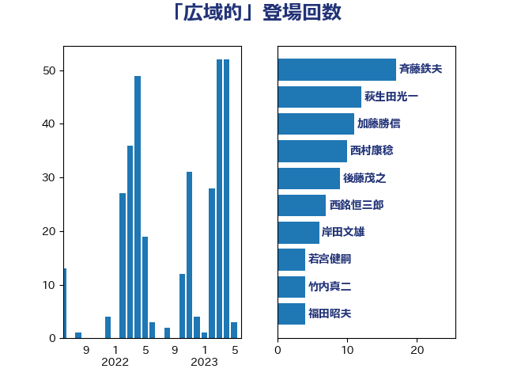

単語「広域的」

| 斉藤鉄夫 | 公明党 | 17 回 |
| 萩生田光一 | 自由民主党 | 12 回 |
| 加藤勝信 | 自由民主党 | 11 回 |
| 西村康稔 | 自由民主党 | 10 回 |
| 後藤茂之 | 自由民主党 | 9 回 |
| 西銘恒三郎 | 自由民主党 | 7 回 |
| 岸田文雄 | 自由民主党 | 6 回 |
| 若宮健嗣 | 自由民主党 | 4 回 |
| 竹内真二 | 公明党 | 4 回 |
| 福田昭夫 | 立憲民主党 | 4 回 |
| 永岡桂子 | 自由民主党 | 4 回 |
| 柴田巧 | 日本維新の会 | 4 回 |
| 島村大 | 自由民主党 | 4 回 |
| 浜口誠 | 国民民主党 | 3 回 |
| 末松信介 | 自由民主党 | 3 回 |
| 平林晃 | 公明党 | 3 回 |
| 大野泰正 | 自由民主党 | 3 回 |
| 高橋光男 | 公明党 | 2 回 |
| 音喜多駿 | 日本維新の会 | 2 回 |
| 重徳和彦 | 立憲民主党 | 2 回 |
| 近藤昭一 | 立憲民主党 | 2 回 |
| 足立康史 | 日本維新の会 | 2 回 |
| 簗和生 | 自由民主党 | 2 回 |
| 田名部匡代 | 立憲民主党 | 2 回 |
| 横山信一 | 公明党 | 2 回 |
| 末次精一 | 立憲民主党 | 2 回 |
| 木原稔 | 自由民主党 | 2 回 |
| 山本博司 | 公明党 | 2 回 |
| 守島正 | 日本維新の会 | 2 回 |
| 伊波洋一 | 無所属 | 2 回 |
| 中川貴元 | 自由民主党 | 2 回 |
| 中川康洋 | 公明党 | 2 回 |
| 鰐淵洋子 | 公明党 | 1 回 |
| 須藤元気 | 無所属 | 1 回 |
| 阿部知子 | 立憲民主党 | 1 回 |
| 長谷川淳二 | 自由民主党 | 1 回 |
| 長妻昭 | 立憲民主党 | 1 回 |
| 金村龍那 | 日本維新の会 | 1 回 |
| 金子恵美 | 立憲民主党 | 1 回 |
| 金子恭之 | 自由民主党 | 1 回 |
| 野間健 | 立憲民主党 | 1 回 |
| 野村哲郎 | 自由民主党 | 1 回 |
| 野中厚 | 自由民主党 | 1 回 |
| 道下大樹 | 立憲民主党 | 1 回 |
| 輿水恵一 | 公明党 | 1 回 |
| 赤木正幸 | 日本維新の会 | 1 回 |
| 谷田川元 | 立憲民主党 | 1 回 |
| 谷公一 | 自由民主党 | 1 回 |
| 西田昭二 | 自由民主党 | 1 回 |
| 菅家一郎 | 自由民主党 | 1 回 |
| 若松謙維 | 公明党 | 1 回 |
| 緒方林太郎 | 無所属 | 1 回 |
| 竹谷とし子 | 公明党 | 1 回 |
| 福島伸享 | 無所属 | 1 回 |
| 神谷裕 | 立憲民主党 | 1 回 |
| 神田潤一 | 自由民主党 | 1 回 |
| 田嶋要 | 立憲民主党 | 1 回 |
| 田島麻衣子 | 立憲民主党 | 1 回 |
| 田中健 | 国民民主党 | 1 回 |
| 牧野たかお | 自由民主党 | 1 回 |
| 松野博一 | 自由民主党 | 1 回 |
| 松本尚 | 自由民主党 | 1 回 |
| 日下正喜 | 公明党 | 1 回 |
| 庄子賢一 | 公明党 | 1 回 |
| 川田龍平 | 立憲民主党 | 1 回 |
| 川崎ひでと | 自由民主党 | 1 回 |
| 岡田直樹 | 自由民主党 | 1 回 |
| 山口壯 | 自由民主党 | 1 回 |
| 小野泰輔 | 日本維新の会 | 1 回 |
| 小倉將信 | 自由民主党 | 1 回 |
| 宮本徹 | 日本共産党 | 1 回 |
| 宮崎勝 | 公明党 | 1 回 |
| 宮口治子 | 立憲民主党 | 1 回 |
| 太田房江 | 自由民主党 | 1 回 |
| 大島敦 | 立憲民主党 | 1 回 |
| 堀場幸子 | 日本維新の会 | 1 回 |
| 国定勇人 | 自由民主党 | 1 回 |
| 国光あやの | 自由民主党 | 1 回 |
| 吉良州司 | 無所属 | 1 回 |
| 吉井章 | 自由民主党 | 1 回 |
| 古川元久 | 国民民主党 | 1 回 |
| 佐藤英道 | 公明党 | 1 回 |
| 佐藤啓 | 自由民主党 | 1 回 |
| 住吉寛紀 | 日本維新の会 | 1 回 |
| 伊東信久 | 日本維新の会 | 1 回 |
| 伊佐進一 | 公明党 | 1 回 |
| 中村裕之 | 自由民主党 | 1 回 |
| 中川正春 | 立憲民主党 | 1 回 |
| 中司宏 | 日本維新の会 | 1 回 |
| 上田英俊 | 自由民主党 | 1 回 |
| ながえ孝子 | 無所属 | 1 回 |